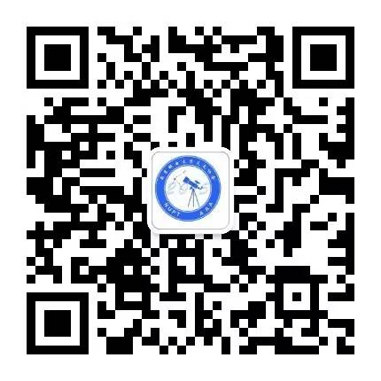
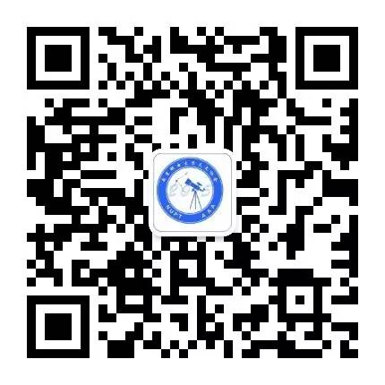

南京邮电大学天文协会
活动报道
-
-
首次出征——天文知识竞赛
5月21日，南邮天协的精英们参加了第十四届南京高校天文联合会举办的天文知识大赛 -
盱眙观测大记事
4月2日,天协的小可爱们和南天联的许多小伙伴一起，来到了盱眙，进行了观测活动~ -
地球一小时 | 南邮天文协会分会场
3月26日，地球一小时活动十周年，南邮天文协会，将继续与南邮绿色风环保协会合作，从天文方面启发，大众对生态环境的保护意识
下一页
JOIN US
关注我们的QQ主页

关注我们的微信公众号


加入我们的新生群

Copyright ©南邮天协宣传部